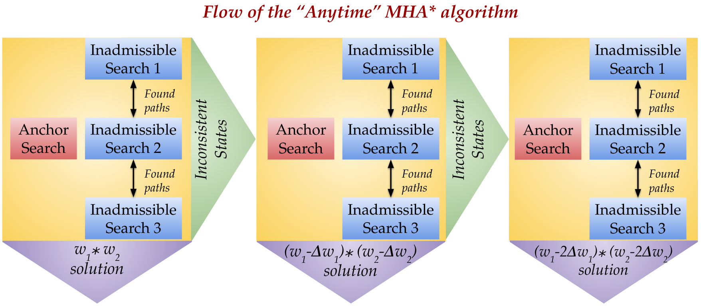
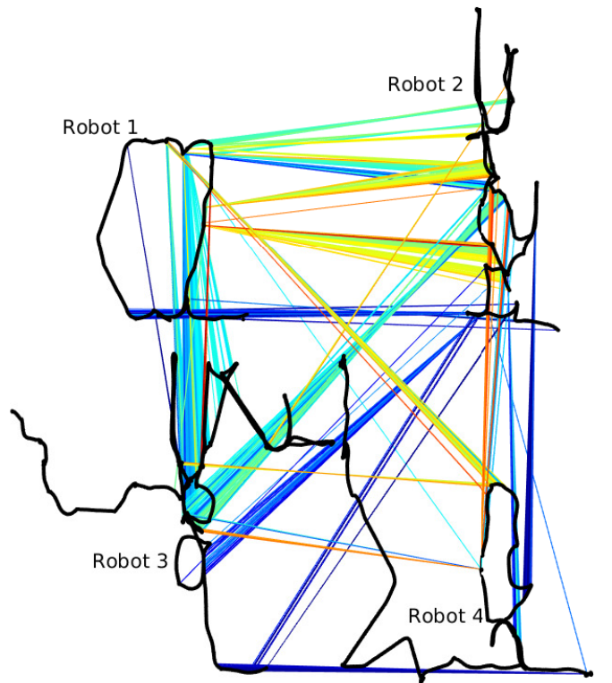
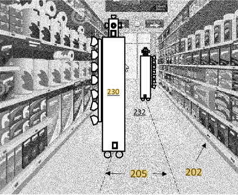

News
Publications
|
|
Implicit Graph Search for Planning on Graphs of Convex Sets
Ramkumar Natarajan,
Chaoqi Liu,
Howie Choset,
Maxim Likhachev
Under Review at RSS 2024
A scalable and efficient way to plan on Graphs of Convex Sets (GCS) with stronger theoretical properties. We plan on GCS using a previously developed hybrid search-optimization framework called INSAT.
Smooth, collision-free motion planning is a fundamental challenge in robotics with a wide range of applications across various industries and domains such as automated manufacturing, search & rescue, underwater exploration, etc. Graphs of Convex Sets (GCS) is a recent method for synthesizing smooth trajectories by decomposing the planning space into convex sets, forming a graph to encode the adjacency relationships within the decomposition, and then simultaneously searching this graph and optimizing parts of the trajectory to obtain the final trajectory. To do this, one must solve a Mixed Integer Convex Program (MICP) and to mitigate computational time, GCS proposes a convex relaxation that is very tight. Despite this tight relaxation, motion planning with GCS for real-world robotics problems translates to solving the simultaneous batch optimization problem that may contain millions of constraints and therefore can be slow. This is further exacerbated by the fact that the size of the GCS problem is invariant to the planning query. Based on the observation that the trajectory solution lies only on a fraction of the set of convex sets, we present two implicit graph search methods for planning on the graph of convex sets called INSATxGCS (IxG) and IxG*. INterleaved Search And Trajectory optimization (INSAT) is a previously developed algorithm that alternates between searching on a graph and optimizing partial paths to find a smooth trajectory. We show that by using an implicit graph search method INSAT on the graph of convex sets, we can plan faster and provide stronger guarantees on completeness and optimality. In addition, introducing a search-based technique to plan on the graph of convex sets enables us to easily leverage well-established techniques such as search parallelization, lazy planning, anytime planning, and replanning as future work. We compare our method with GCS to show numerically that IxG outperforms in several applications including planning for an 18-DoF multi-arm assembly scenario.
|
|
|
PINSAT: Parallelized Interleaving of Graph Search and Trajectory Optimization for Kinodynamic Motion Planning
Ramkumar Natarajan,
Shohin Mukherjee,
Howie Choset,
Maxim Likhachev
In submission, 2024
Inspired by the recent work on edge-based parallel graph search, PINSAT introduces systematic parallelization in INSAT to achieve lower planning times and higher success rates, while maintaining significantly lower costs.
Trajectory optimization is a widely used technique in robot motion planning for letting the dynamics and constraints on the system shape and synthesize complex behaviors. Several previous works have shown its benefits in high-dimensional continuous state spaces and under differential constraints. However, long time horizons and planning around obstacles in non-convex spaces pose challenges in guaranteeing convergence or finding optimal solutions. As a result, discrete graph search planners and sampling-based planers are preferred when facing obstacle-cluttered environments. A recently developed algorithm called INSAT effectively combines graph search in the low-dimensional subspace and trajectory optimization in the full-dimensional space for global kinodynamic planning over long horizons. Although INSAT successfully reasoned about and solved complex planning problems, the numerous expensive calls to an optimizer resulted in large planning times, thereby limiting its practical use. Inspired by the recent work on edge-based parallel graph search, we present PINSAT, which introduces systematic parallelization in INSAT to achieve lower planning times and higher success rates, while maintaining significantly lower costs over relevant baselines. We demonstrate PINSAT by evaluating it on 6 DoF kinodynamic manipulation planning with obstacles.
|
|
|
Long Horizon Planning through Contact using Discrete Search and Continuous Optimization
Ramkumar Natarajan,
Garrison Johnston,
Nabil Simaan,
Maxim Likhachev,
Howie Choset
Under Review at IEEE Transactions on Robotics, 2023
An extension of INSAT framework for planning through contact with several algorithmic optimizations to combat high-dimensional search space and combinatorial contact modes.
Robots often have to perform manipulation tasks in close proximity to people. As such, it is desirable to use a robot arm that has limited joint torques to not injure the nearby person and interacts with the environment to explore new possibilities for completing a task. By bracing against the environment, robots can expand their reachable workspace, which would otherwise be inaccessible due to exceeding actuator torque limits, and accomplish tasks beyond their design specifications. However, motion planning for complex contact-rich tasks requires reasoning through the permutations of different possible contact modes and bracing locations, which grow exponentially with the number of contact points and links in the robot. To address this combinatorial problem, we developed INSAT, which interleaves graph search to explore the manipulator joint configuration and the contact mode space with incremental trajectory optimizations seeded by neighborhood solutions to find a dynamically feasible trajectory through contact. In this paper, we present recent additions to the INSAT algorithm that improve its runtime performance. In particular, we propose Lazy INSAT with reduced optimization rejection that systematically procrastinates its calls to trajectory optimization while reusing feasible solutions that violate boundary constraints. The algorithm is evaluated on a heavy payload transportation task in simulation and on physical hardware. In simulation, we show that Lazy INSAT can discover solutions for tasks that cannot be accomplished within its design limits and without interacting with the environment. In comparison to executing the same trajectory without environment support, we demonstrate that the utilization of bracing contacts reduces the overall torque required to execute the trajectory.
|
|
|
Preprocessing-based Kinodynamic Motion Planning Framework for Intercepting Projectiles using a Robot Manipulator
Ramkumar Natarajan*,
Hanlan Yang*,
Qintong Xie,
Manash Pratim Das,
Fahad Islam,
Muhammad Suhail Saleem,
Howie Choset,
Maxim Likhachev
International Conference on Robotics and Automation (ICRA), 2024
Real-time projectile interception using constant-time kinodynamic motion planning. The system is made of an industrial manipulator holding a shield and a stereo camera for live perception.
We are interested in studying sports with robots and starting with the problem of intercepting a projectile moving toward a robot manipulator equipped with a shield. To successfully perform this task, the robot needs to (i) detect the incoming projectile, (ii) predict the projectile's future motion, (iii) plan a minimum-time rapid trajectory that can evade obstacles and intercept the projectile, and (iv) execute the planned trajectory. These four steps must be performed under the manipulator's dynamic limits and extreme time constraints (<350ms in our setting) to successfully intercept the projectile. In addition, we want these trajectories to be smooth to reduce the robot's joint torques and the impulse on the platform on which it is mounted. To this end, we propose a kinodynamic motion planning framework that preprocesses smooth trajectories offline to allow real-time collision-free executions online. We present an end-to-end pipeline along with our planning framework, including perception, prediction, and execution modules. We evaluate our framework experimentally in simulation and show that it has a higher blocking success rate than the baselines. Further, we deploy our pipeline on a robotic system comprising an industrial arm (ABB IRB-1600) and an onboard stereo camera (ZED 2i), which achieves a 78% success rate in projectile interceptions.
|
|
|
Torque-limited Manipulation Planning through Contact by Interleaving Graph Search and Trajectory Optimization
Ramkumar Natarajan,
Garrison Johnston,
Nabil Simaan,
Maxim Likhachev,
Howie Choset
International Conference on Robotics and Automation (ICRA), 2023
A framework for simulataneous and systematic exploration of contact modes and dynamically feasible contact-rich trajectory generation.
Robots often have to perform manipulation tasks in close proximity to people. As such, it is desirable to use a robot arm that has limited joint torques so as to not injure the nearby person. Unfortunately, these limited torques then limit the payload capability of the arm. By using contact with the environment, robots can expand their reachable workspace that, otherwise, would be inaccessible due to exceeding actuator torque limits. We adapt our recently developed INSAT algorithm to tackle the problem of torque-limited whole arm manipulation planning through contact. INSAT requires no prior over contact mode sequence and no initial template or seed for trajectory optimization. INSAT achieves this by interleaving graph search to explore the manipulator joint configuration space with incremental trajectory optimizations seeded by neighborhood solutions to find a dynamically feasible trajectory through contact. We demonstrate our results on a variety of manipulators and scenarios in simulation. We also experimentally show our planner exploiting robot-environment contact for the pick and place of a payload using a Kinova Gen3 robot. In comparison to the same trajectory running in free space, we experimentally show that the utilization of bracing contacts reduces the overall torque required to execute the trajectory.
|
|
|
Interleaving Graph Search and Trajectory Optimization for Aggressive Quadrotor Flight
Ramkumar Natarajan,
Howie Choset,
Maxim Likhachev
IEEE Robotics and Automation Letters (RA-L)
Introduces a motion planning framework called INterleaved Search And Trajectory optimization (INSAT) for global, long-horizon reasoning through nonconvex spaces.
Quadrotors can achieve aggressive flight by tracking complex maneuvers and rapidly changing directions. Planning for aggressive flight with trajectory optimization could be incredibly fast, even in higher dimensions, and can account for dynamics of the quadrotor, however, only provides a locally optimal solution. On the other hand, planning with discrete graph search can handle non-convex spaces to guarantee optimality but suffers from exponential complexity with the dimension of search. We introduce a framework for aggressive quadrotor trajectory generation with global reasoning capabilities that combines the best of trajectory optimization and discrete graph search. Specifically, we develop a novel algorithmic framework that interleaves these two methods to complement each other and generate trajectories with provable guarantees on completeness up to discretization. We demonstrate and quantitatively analyze the performance of our algorithm in challenging simulation environments with narrow gaps that create severe attitude constraints and push the dynamic capabilities of the quadrotor. Experiments show the benefits of the proposed algorithmic framework over standalone trajectory optimization and graph search-based planning techniques for aggressive quadrotor flight.
|
|

|
A-MHA*: Anytime Multi-Heuristic A*
Ramkumar Natarajan,
Muhammad Suhail Saleem,
Sandip Aine,
Howie Choset,
Maxim Likhachev
International Symposium on Combinatorial Search (SoCS) 2019
Extends Multi-Heurisitic A* (MHA*) to an anytime version. A-MHA* will quickly find a solution and continues improving it until timeout.
Designing good heuristic functions for graph search requires adequate domain knowledge. It is often easy to design heuristics that perform well and correlate with the underlying true cost-to-go values in certain parts of the search space but these may not be admissible throughout the domain thereby affecting the optimality guarantees of the search. Bounded suboptimal search using several of such partially good but inadmissible heuristics was developed in Multi-Heuristic A*(MHA*). Although MHA* leverages multiple inadmissible heuristics to potentially generate a faster suboptimal solution, the original version does not improve the solution over time. It is an one shot algorithm that requires careful setting of inflation factors to obtain a desired one time solution. In this work, we tackle this issue by extending MHA* to an anytime version that finds a feasible suboptimal solution quickly and continually improve it until time runs out. Our work is inspired from the Anytime Repairing A*(ARA*) algorithm. We prove that our precise adaptation of ARA* concepts in the MHA* framework preserves the original suboptimal and completeness guarantees and enhances MHA* to perform in an anytime fashion. Furthermore, we report the performance of A-MHA* in 3-D path planning domain and sliding tiles puzzle and compare against MHA* and other anytime algorithms.
|
|

|
Efficient Factor Graph Fusion for Multi-robot
Mapping and Beyond
Ramkumar Natarajan,
Michael A. Gennert
International Conference on Information Fusion (FUSION) 2018
An efficient way to reuse the ordering computed during variable elimination when combining multiple factorized graphs. We demonstrate our method using loop-closure in multi-robot mapping.
This work presents a novel method to efficiently factorize the combination of multiple factor graphs having common variables of estimation. Variable ordering, a well-known variable elimination technique in linear algebra is employed to efficiently solve a factor graph. Our primary contribution in this work is to reuse the variable ordering of the graphs being combined to find the ordering of the fused graph called fusion ordering. By reusing the variable ordering of the parent graphs we were able to produce an order-of-magnitude difference in the time required for solving the fused graph. A formal verification is provided to show that the proposed strategy does not violate any of the relevant standards. The fusion ordering is experimented on the standard dataset used in the sparse linear algebra community called SuiteSparse. Recent factor graph formulation for Simultaneous Localization and Mapping (SLAM) like Incremental Smoothing and Mapping (ISAM) using the Bayes tree has been very successful and garnered much attention. In the case of mapping, multi-robot system has a great advantage over a single robot that provides faster map coverage and better estimation quality. We also demonstrate the improvement of our ordering scheme on a real-world multi-robot AP Hill dataset.
|
|
|
Towards Planning and Control of Hybrid Systems with Limit Cycle using LQR Trees
Siddharthan Rajasekaran*
Ramkumar Natarajan*,
Jonathan D. Taylor
IEEE/RSJ International Conference on Intelligent Robots and Systems (IROS) 2017
Extends LQR trees which builds robust stabilizable offline control policies to hybrid systems with limit cycle.
We present a multi-query recovery policy for a hybrid system with goal limit cycle. The sample trajectories and the hybrid limit cycle of the dynamical system are stabilized using locally valid Time Varying LQR controller policies which probabilistically cover a bounded region of state space. The original LQR Tree algorithm builds such trees for non-linear static and non-hybrid systems like a pendulum or a cart-pole. We leverage the idea of LQR trees to plan with a continuous control set, unlike methods that rely on discretization like dynamic programming to plan for hybrid dynamical systems where it is hard to capture the exact event of discrete transition. We test the algorithm on a compass gait model by stabilizing a dynamic walking hybrid limit cycle with point foot contact from random initial conditions. We show results from the simulation where the system comes back to a stable behavior with initial position or velocity perturbation and noise.
|
Patents
|

|
Color Haar Classifier for Retail Shelf Label Detection
Jonathan D. Taylor,
Ramkumar Natarajan
Bossa Nova Robotics IP Inc
A method for a multiple camera sensor suite mounted on an autonomous robot to be able to detect and recognize shelf labels using color Haar classifiers is described.
A method for a multiple camera sensor suite mounted on an autonomous robot to be able to detect and recognize shelf labels using color Haar classifiers is described.
|
Graduate Student Instructor, Optimal Control and Reinforcement Learning (16-754), Spring 2020
Graduate Student Instructor, Robot Kinematics and Dynamics (16-782), Fall 2019
Graduate Student Instructor, Advanced Digital System Design using FPGAs (ECE 3849), Spring 2016
|
|
{kind=link}